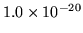

CLASS MODEL Word|Class <string: counts/probs> Derived from: <file> Number of classes: <int> Number of words: <int> Iterations: <int> Class n-gram counts follow; word|class component is at end of file.The second line must state either counts or probabilities as appropriate for the relevant component file used when constructing this composite file. The fields are mostly self-explanatory. The Iterations: header is for information only and records how many iterations had been performed to produce the classmap contained within the file, and the Derived from: header is similarly also for display purposes only. Any number of headers may be present; the header section is terminated by finding a line beginning with the five characters making up Class. The colon-terminated headers may be in any order.
The class-given-classes  -gram component of the model then follows
immediately in any of the formats supported by word
-gram component of the model then follows
immediately in any of the formats supported by word  -gram language
models - ie. those described in section 16.7. No
blank lines are expected between the header shown above and the
included model, although they may be supported by the embedded model.
-gram language
models - ie. those described in section 16.7. No
blank lines are expected between the header shown above and the
included model, although they may be supported by the embedded model.
Immediately following the class-given-classes  -gram component
follows the body of the word-given-class probabilities or counts file
as described in sections 16.8.1 and
16.8.2 above. That is, the remainder of the
file consists of lines of the form:
-gram component
follows the body of the word-given-class probabilities or counts file
as described in sections 16.8.1 and
16.8.2 above. That is, the remainder of the
file consists of lines of the form:
<word> CLASS<int> <float/int>One line is expected for each word as specified in the header at the top of the file. Integer word counts should be provided in the final field for each word in the case of a counts file, or word-given-class probabilities if a probabilities file - as specified by the second line of the overall file. In the latter case each <float> specifies the natural logarithm of the probability of the word given the class, or -99.9900 if the probability of the word is less than .
CLASS<int> must be the name of a
class in the classmap (technically actually the wordmap) used to build
the class-given-class history  -gram component of the language model
- the file built by LBUILD. In the current implementation
these class names are restricted to being of the form CLASS<int>, although a modification to the code in LMODEL.C
would allow this restriction to be removed.
-gram component of the language model
- the file built by LBUILD. In the current implementation
these class names are restricted to being of the form CLASS<int>, although a modification to the code in LMODEL.C
would allow this restriction to be removed.